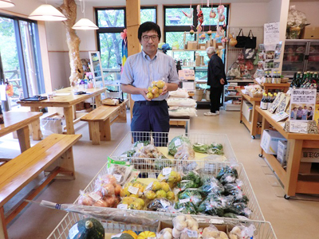

3.11を忘れない・・
みやぎ生協から被災地・宮城のいまをお伝えします
第39回 2016年11月5日
地道な測定と情報提供で風評被害を乗り越える
｢山菜などが100Bq/kg（※）を超えれば、それは農家にとって実害。しかし100Bq/kgを超えない農産物まで不安視される、いわゆる風評被害には、実害以上に頭を悩ませました｣。丸森町で農産物直売所を営む八島哲郎さんは原発事故で受けた様々な影響をふり返り、そう話します。
丸森町は山菜、果樹など四季の農産物に恵まれた宮城県南のまちです。東京電力福島第一原発の事故による放射性物質飛散の影響で露地原木栽培のシイタケなどが出荷停止となり、町内の農産物直売所は大きなダメージを受けました。
丸森町は、事故後早くに食品放射能測定システムを導入し検査体制を整えました。農林課の引地誠さんは「市場に出す農産物は生協さんはじめ出荷先の理解が深かったので、風評被害の影響は比較的少なかった。しかし観光客を相手に商いをする農産物直売所は、風評による観光客の減少で売上減少や廃業などの打撃を受けた」と言います。
2012年5月のタケノコ出荷制限指示により、その年のタケノコはすべて廃棄することになりました。以来経験したことの無い、大切に育てたタケノコを掘って捨てる辛い作業をくり返しましたが、間伐など竹林の手入れはいつでも再出荷できるよう怠りませんでした。そして2014年に町内8地区の内耕野(こうや)地区、2015年に丸森地区・小斎(こさい)地区の出荷制限が解除になり、直売所にタケノコが並ぶようになったのです。「もう戻って来ないとあきらめていたお客さんから“良かったね、待ってたよ”と言われて本当に嬉しかった」（八島さん）。
生産者は解除後も消費者に対し安全安心なタケノコを提供するため、出荷販売する際は測定器で全数検査を実施し、65Bq/kg以下のみに検査済みラベルを貼付して出荷販売します。名産の干し柿も、100Bq/kgを超えたことはありませんが、風評を払しょくするため自主検査を実施し、安全性を確認してから出荷します。
｢現在も、数値ではなく漠然とした風評で捉える人がいる。手間はかかるが地道に測定を続けて正しい情報を提供し、判断してもらうしかない｣と八島さんは思っています。
町も、高圧洗浄機による果樹木の除染や丸森の物産PRイベントなどを通じて農家を支援してきました。直売所には徐々に観光客が戻ってきています。「丸森の農産物をおいしい、そして安全と思っていただけるお客さまとつながっていきたい」。そんな生産者の思いが、丸森の農産物直売所の賑わいを支えています。
※食品中の放射性物質の基準値（2012年4月1日設定）

農産物直売所「いなか道の駅やしまや」の八島哲郎さん。約70名の会員が農産物を出荷。
タケノコカレーやタケノコご飯の素など商品開発にも力を入れています。
 前の記事 第38回「新商店街にまちの盛衰がかかっている」（2016年10月5日）
前の記事 第38回「新商店街にまちの盛衰がかかっている」（2016年10月5日）